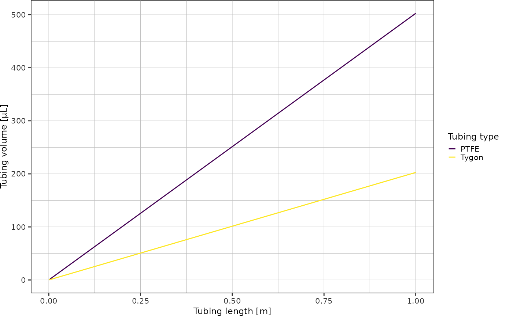
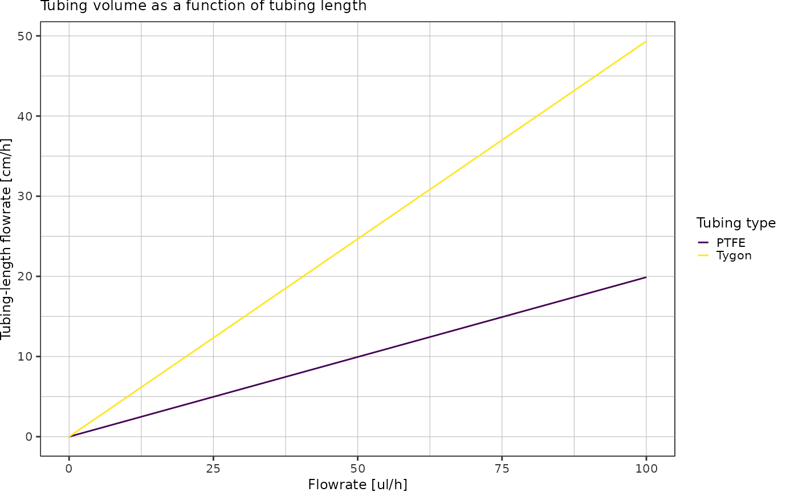
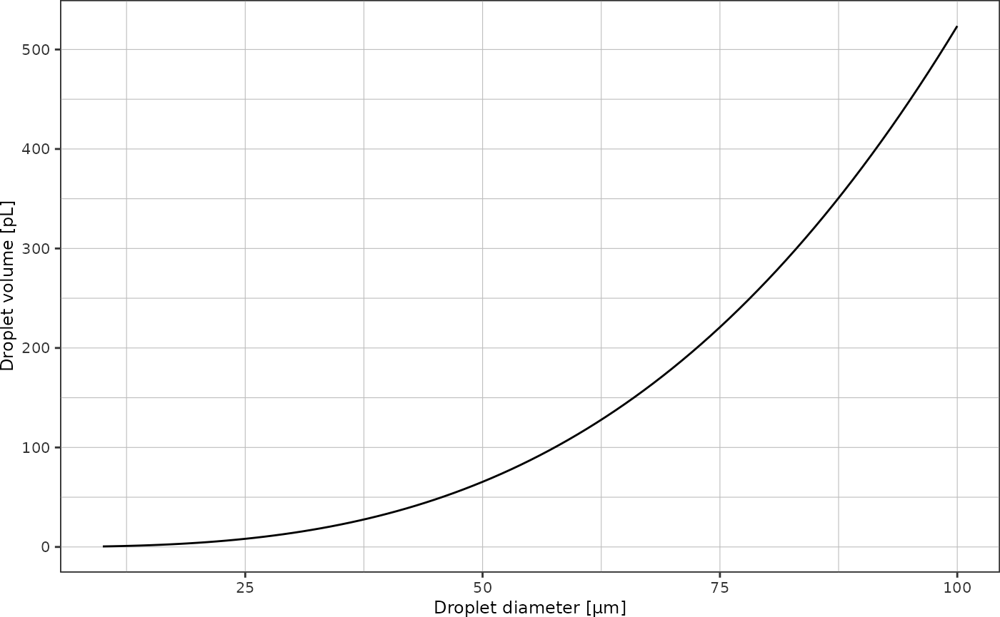
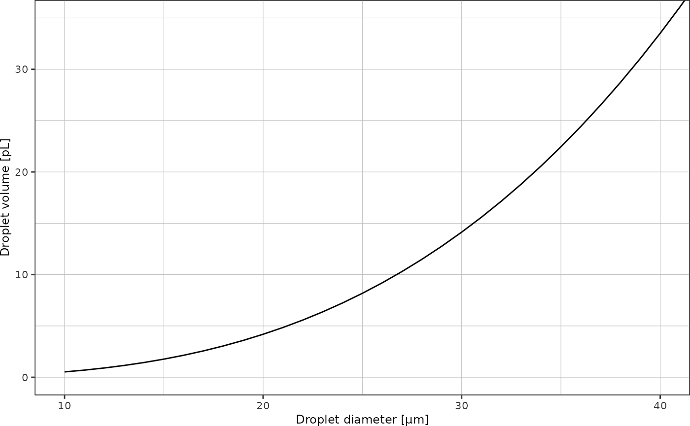
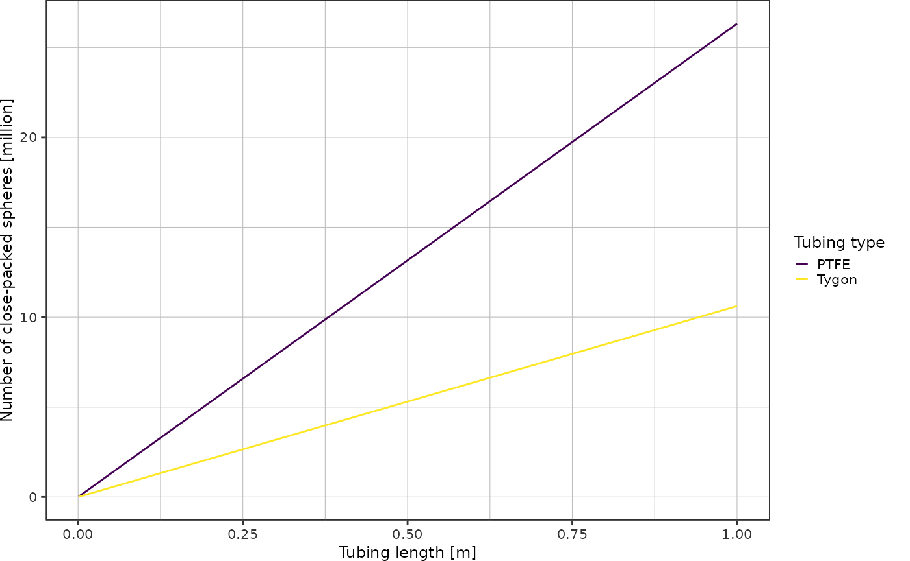

Volume Estimates
droplet_volumes.RmdIn this vignette, calculations to estimate volumes and quantities relevant for the droplet making and picoinjection workflow are documented.
Tubing
Volume of a cylinder with radius \(r\) and height \(h\):
\[V = \pi r^2 h\]
getCylinderVolume <- function(radius, height) {
return(pi * radius^2 * height)
}Tubing options
| type | inner diameter | outer diameter |
|---|---|---|
| Typgon | 0.508 mm (0.020 in) | 1.524 mm (0.060 in) |
| PTFE | 0.8 mm | 1.6 mm |
# everything in m
radiusTygon <- 0.508e-3 / 2
radiusPTFE <- 0.8e-3 / 2Plot the tubing volume as a function of tubing length for lengths up to 1 meter:
volumes <- tibble::tibble("length" = seq(1,1000)) %>%
dplyr::mutate(length = length * 1e-3) %>% # convert into mm
dplyr::mutate(v_tygon = getCylinderVolume(radiusTygon, length),
v_ptfe = getCylinderVolume(radiusPTFE, length)) %>%
tidyr::pivot_longer(c(v_tygon, v_ptfe), names_to = "type", values_to = "volume")
volumes
#> # A tibble: 2,000 × 3
#> length type volume
#> <dbl> <chr> <dbl>
#> 1 0.001 v_tygon 2.03e-10
#> 2 0.001 v_ptfe 5.03e-10
#> 3 0.002 v_tygon 4.05e-10
#> 4 0.002 v_ptfe 1.01e- 9
#> 5 0.003 v_tygon 6.08e-10
#> 6 0.003 v_ptfe 1.51e- 9
#> 7 0.004 v_tygon 8.11e-10
#> 8 0.004 v_ptfe 2.01e- 9
#> 9 0.005 v_tygon 1.01e- 9
#> 10 0.005 v_ptfe 2.51e- 9
#> # … with 1,990 more rows
ggplot(volumes, aes(x = length, y = volume * 1e9, color = type)) +
geom_line() +
scale_colour_viridis_d(labels = c("PTFE", "Tygon")) +
labs(x = "Tubing length [m]",
y = "Tubing volume [µL]",
color = "Tubing type") +
theme_pretty()
Convert flowrate unit µl/h into tubing cm/h:
flowrates <- tibble::tibble("ul_h" = seq(0, 100)) %>%
dplyr::mutate("Tygon" = ul_h / (getCylinderVolume(radiusTygon, 0.01) * 1e9),
"PTFE" = ul_h / (getCylinderVolume(radiusPTFE, 0.01) * 1e9)) %>%
tidyr::pivot_longer(!ul_h, names_to = "tubing_type", values_to = "cm_h")
ggplot(flowrates, aes(x = ul_h, y = cm_h, color = tubing_type)) +
geom_line() +
scale_color_viridis_d() +
theme_pretty() +
labs(x = "Flowrate [ul/h]",
y = "Tubing-length flowrate [cm/h]",
color = "Tubing type")
Droplets
How much liquid is contained in a droplet of diameter \(d\)?
Volume of a sphere: \[V = \frac{4}{3} \pi r^3\]
getSphereVolume <- function(radius) {
return(4/3 * pi * radius^3)
}Plot droplet volumes as function of diameter:
tibble::tibble("diameter" = seq(10, 100) * 1e-6) %>% # 10-200 µm droplets
dplyr::mutate("volume" = getSphereVolume(diameter/2)) %>%
ggplot(aes(x = diameter*1e6, y = volume * 1e15)) + # y-axis in picoliters
geom_line() +
labs(x = "Droplet diameter [µm]",
y = "Droplet volume [pL]") +
theme_pretty()
For droplet sizes up to 40 µm:
last_plot() +
coord_cartesian(xlim = c(10, 40), ylim = c(0, 35))
How many droplets are there in x mm of Tygon/PTFE tubing?
radiusDroplet <- 15e-6 # 30 micron dropletsAssuming close-packing of equal spheres: fraction of space occupied by spheres is
\[\frac{\pi}{3 \sqrt{2}} \approx 0.74048\]
Using this packing density, I can calculate the volume occupied by spheres for a given tubing length. Dividing by the known volume of a single droplet yields the total number of droplets contained in x meters of tubing, assuming close-packing of equal spheres.
getNumberOfClosePackedSpheres <- function(radius, volume) {
volumeSingleSphere <- 4/3 * pi * radius^3
packingDensity <- pi/3/sqrt(2)
return(packingDensity * volume / volumeSingleSphere)
}Plot number of close-packed spheres over tubing length:
volumes %>%
dplyr::mutate(n_droplets = getNumberOfClosePackedSpheres(radiusDroplet, volume)) %>%
ggplot(aes(x = length, y = n_droplets*1e-6, color = type)) +
geom_line() +
scale_colour_viridis_d(labels = c("PTFE", "Tygon")) +
labs(x = "Tubing length [m]",
y = "Number of close-packed spheres [million]",
color = "Tubing type") +
theme_pretty()